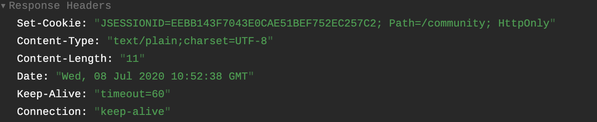

前言
本篇文章先介绍了HTTP的基本特点，然后介绍了Cookie和Session以及两者应用场景，最后用Kaptcha生成验证码
HTTP是无状态的，有会话的
无状态
在同一个连接中，两个执行成功的请求之间是没有关系的，所以用户没办法在同一个网站中进行连续的交互。（就是第二次访问服务器不知道和第一次是否是同一个用户）
有会话
HTTP Cookies解决了这个问题，把Cookies添加到头部中，创建一个会话让每次请求都能共享相同的上下文信息，达成相同的状态。
Cookie
- Cookie的作用就是让服务器记住客户端，是服务器发送到用户浏览器并保存在本地的一小块数据，它会在浏览器下次向同一服务器再发起请求时被携带并发送到服务器上（类似会员卡）
- Cookie主要用于一下三个方面:
- 会话状态管理（登录状态，购物车，游戏分数等需要记录的信息）
- 个性化设置
- 浏览器行为跟踪
测试cookie
首先写一个cookie的测试方法，设置cookie路径为整个项目1
2
3
4
5
6
7
8
9
10
11
12
13
14
15@RequestMapping(path = “/cookie/set”,method = RequestMethod.*GET*)
@ResponseBody
public String testCookie(HttpServletResponse response){
//创建cookie
Cookie cookie = new Cookie (“code”, CommunityUtil.*generateUUID*());
//设置cookie生效范围，避免浪费网络资源
cookie.setPath(“/community”);
//cookie默认存在内存里，关掉浏览器就消失了
//设置cookie存储时间可以存在硬盘里(单位是秒)
cookie.setMaxAge(60*10);
//发送cookie
response.addCookie(cookie);
return “test cookie”;
}
这样浏览器访问服务器，服务器就会返回cookie,如下图
下一次浏览器访问服务器（在设置的路径范围内），就会携带这个cookie，如下图
- 使用这个浏览器携带的cookie
1
2
3
4
5
6@RequestMapping(path = “/cookie/get”,method = RequestMethod.GET)
@ResponseBody
public String getCookie(@CookieValue(“code”) String code ){
System.out.println(code);
return “get cookie”;
}
Session
- Cookie虽然解决了HTTP无状态的问题，但是不便于存敏感信息（密码），而且每次给服务器传Cookie也增加服务端压力
- Session是JavaEE的标准，在服务端记录客户端信息（不用带会员卡，报电话号码即可）
数据存放在服务端更安全，但是也会增加服务端压力。Session示例
- 设置Session
1
2
3
4
5
6
7
8
9//Session示例
//Session可以存各种类型数据 ，Cookie只能存String，而且少量
@RequestMapping(path = “/session/set”,method = RequestMethod.*GET*)
@ResponseBody
public String setSession(HttpSession session){
session.setAttribute(“id”,1);
session.setAttribute(“name”, “test”);
return “set session”;
}

- 服务端通过SessionId取值
1
2
3
4
5
6
7@RequestMapping(path = “/session/get”,method = RequestMethod.*GET*)
@ResponseBody
public String getSession(HttpSession session){
System.*out*.println(session.getAttribute(“id”));
System.*out*.println(session.getAttribute(“name”));
return “get session”;
}
总结
能用Cookie用Cookie，减少服务器压力，需要有安全保障的信息用Session
，分布式部署尽量不用session，问题如下图A
分布式部署的问题有三种解决方案：
粘性Session，就是同一IP用同一服务器，但是很难保证服务器均衡
同步Session,把Session给每个服务器同步，但是服务器压力大而且之间耦合度变高
共享Session,单独一台服务器单独处理Session，缺点是，别的服务器都依赖这台服务器
主流解决办法：
能用Cookie用Cookie,敏感数据存在数据库（Redis比较好r）Kaptcha生成验证码
导包
1
2
3
4
5<dependency>
<groupId>com.github.penggle</groupId>
<artifactId>kaptcha</artifactId>
<version>2.3.2</version>
</dependency>
配置Bean
1 | @Configuration |
Controller
1 | */*** |
显示结果
设置登录模板页面
首先把刷新验证码设置为动态的。1
2<div class=“col-sm-4”>
<img th:src=“@{/kaptcha}” id=“kaptcha” style=“width:100px;height:40px;” class=“mr-2”/>
- 点击刷新验证码按钮的时候，因为验证码图片访问路径没变，浏览器会认为/community/kaptcha是个静态文件，所以要在路径后面加一个无效参数，欺骗浏览器让它每次都获取验证码图片：
- 在global.js里设置全局变量，这样避免后面要更改路径
var CONTEXT_PATH = “/community”; - 在Login.html后面加入js：
1
2
3
4
5<div class=“col-sm-4”>
<img th:src=“@{/kaptcha}” id=“kaptcha” style=“width:100px;height:40px;” class=“mr-2”/>
<a href=“javascript:refresh_kaptcha();” class=“font-size-12 align-bottom”>刷新验证码</a>
</div>
1 | <script> |
问题
测试的时候页面一直在加载，验证码也刷新不出来，检查页面元素，报错是因为找不到refresh_kaptcha(),检查了很久script发现没问题，最后发现是jquery的载入错误，重新换了个jquery的cdn引用1
2